Programmer User Guide¶
The Programmer tool is used to activate and program the CC35XX family of devices. It is currently still in development with new features being added
Attention
Please note that throughout the activation and initial programming the window should NOT be refreshed at any point. Additionally, the activation and initial programming process should only be done ONCE for each new CC35xx.
In the home page click on the Programmer tool.

Figure 3 Toolbox Application Home Page
This will open a window that will allow you to see any XDS connected device. Select the connected XDS110 device from a drop-down list of XDS-devices connected to the PC.
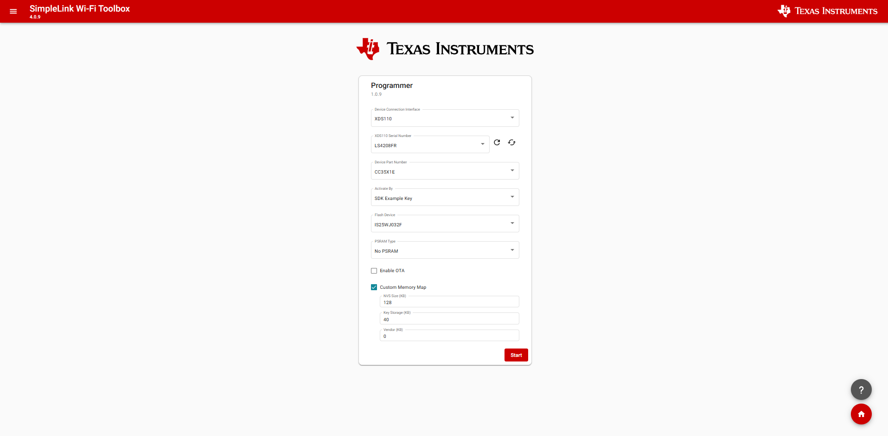
Figure 4 XDS110 Select Page
{kind=link}
Next select the flash option

Figure 5 Flash Select
Note
If you are using a Revision A Launchpad, select IS25WJ064F. For Launchpads Revision E4 or earlier revisions, select IS25WJ032F
After, select the appropriate PSRAM connected to the device
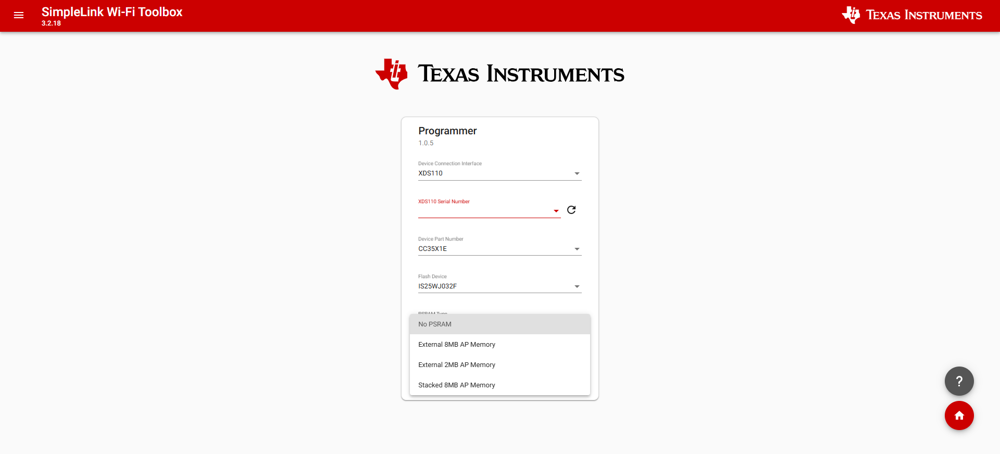
Figure 6 PSRAM Select
{kind=link}
There will also be an Enable OTA and Custom Memory Map checkbox
{kind=link}
- The Enable OTA checkbox will configure the memory map to make room for 2 image slots. Currently this option is only available for 4MB flash, the 8MB flash is enabled by default.
- The Custom Memory Map checkbox will allow changing the size of NVS, Key Storage, and any extra Vendor dedicated memory region
Based on the CC35xx state (activated or deactivated) you will have different options
Before your device is activated, you are presented three options in the Wi-Fi Toolbox:
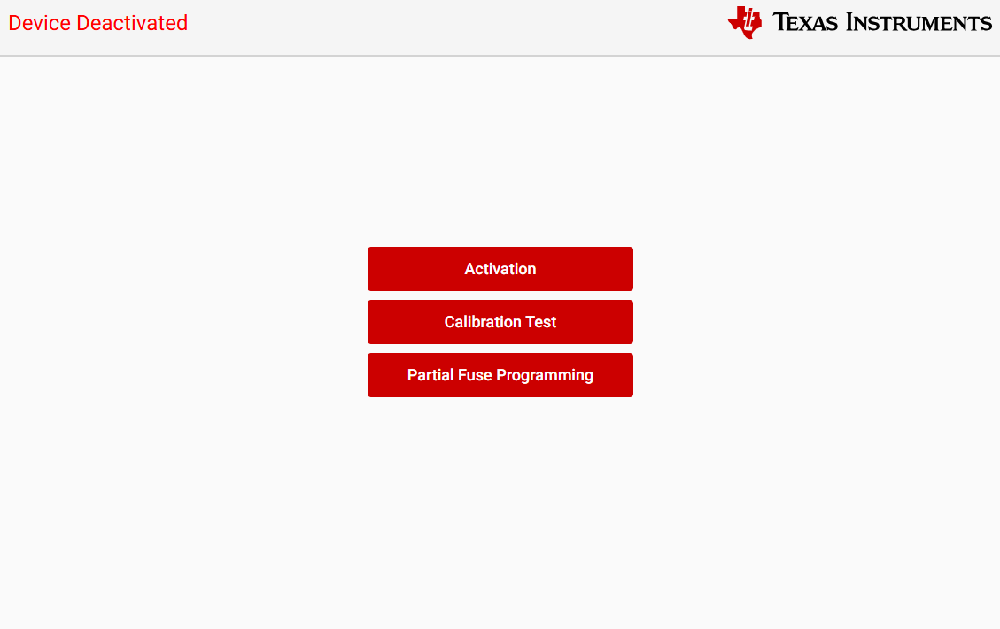
You can choose to activate the device, set the fuses, or conduct a calibrator test. Note that if you decide to activate the device, you will end up needing to program the fuses as well.
The following step will require you to select the activation method. There are 3 options for activating the device:
- Vendor Key - Images will be verified using Vendors personal key
- SDK Example Key - Emulate the full vendor operation using an emulation key (TI-provided ‘debug’ key).
- Authentication Bypass - Enable the vendor to load and execute unauthenticated images.
{kind=link}
Activation Type Page
Vendor Key
Choosing Vendor Key will require to do a onetime setup in the sign.py script located in simplelink_wifi_toolbox_x_x_x/flash-images-builder/signing_module
import pathlib
import requests
from cryptography.hazmat.primitives.serialization import (
load_pem_public_key,
Encoding,
PublicFormat,
)
from OpenSSL.crypto import FILETYPE_PEM
from OpenSSL.crypto import sign, load_privatekey
PUBLIC_KEY = None
PRIVATE_KEY = None
def buffer_sign(buffer_for_sign: bytes) -> bytes:
if PRIVATE_KEY is not None:
with open(PRIVATE_KEY, "rb") as f:
priv_key_data = f.read()
pkey = load_privatekey(FILETYPE_PEM, priv_key_data)
signature = sign(pkey, buffer_for_sign, "sha256")
return signature
else:
return b""
This script is used by the Wi-Fi toolbox each time it programs the CC35xx device that was activated via “vendor key”.
You will see a PUBLIC_KEY and PRIVATE_KEY field and there are two options to set that up.
- Provide the public and private keys to the script
- Update the signing buffer and public key retrieval functions such that they can access these keys (or a signed application image altogether) from somewhere else (ie. server via API call, etc). How you choose to implement this is up to you.
This is what you will see when choosing the “Vendor Key” without the proper key setup.
{kind=link}
SDK Example Key
Since the SDK example key was selected the “Root of Trust” key will be pre-selected. The key is not pre-selected if the Authentication Bypass activation method is chosen.

Figure 8 Activation Page
At the end of the activation process the tool will report a summary for review. In case of failed RoT fuse-programming, the activation/programming process will be halted.

Figure 9 Review Page
Initial Programming
Once the activation process has concluded, the Initial Programming process will start automatically in the next window. During this process you will download an example image to the CC35xx in addition to flash configuration. As a reminder, please be sure not to refresh the page during this process.
Attention
During early access, initial programming will be done with predefined images and configurations. You will not be able to change the pre-selected inputs.
- Image selectionBoot Sector - Flash partition, calibration, and flash high-speed configuration.
- TI Bootloader - RAM-bootloader (2nd stage BL provided by TI).
- Vendor Demo Image - for FCS versions the image will program the Network Terminal example.

Figure 10 Initial Programming Page
Press the program button to begin Initial Programming. Once programmed you will be met with the following screen.
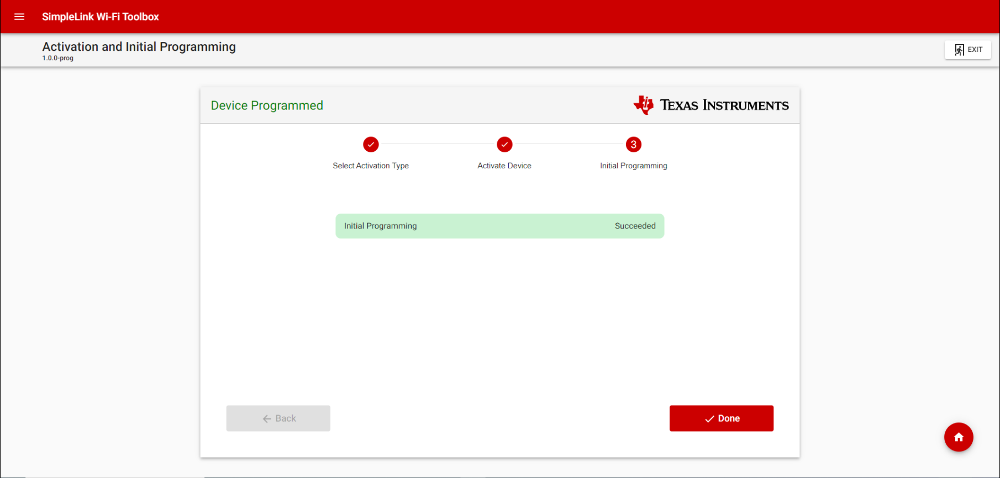
Figure 11 Initial Programming Page
Before you program your device for the first time, there fuse settings you must configure before they are locked in place and can never be altered again.
- Authentication Enable
- Flash Reset Type
- Restrict INI
- App OTP
- Country Code
- MAC Address Override
- Wi-Fi 6 Configuration
The images below show the default values of the fuses based on activation type. The authentication enable and flash reset type settings must NOT be changed, but you are free to tinker with anything else.
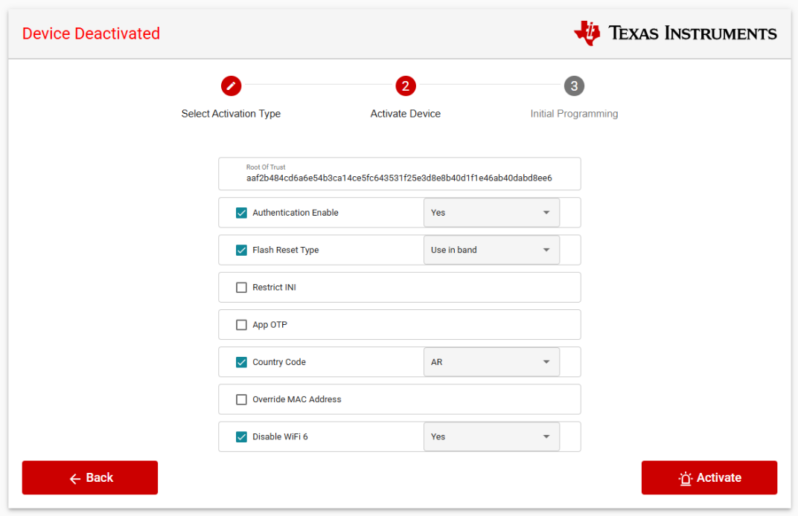
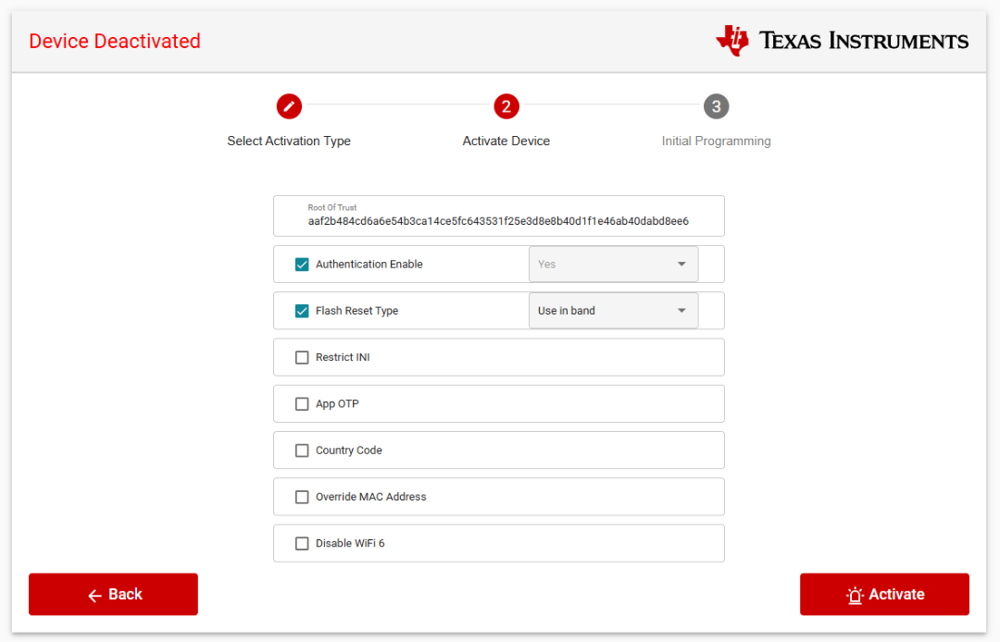
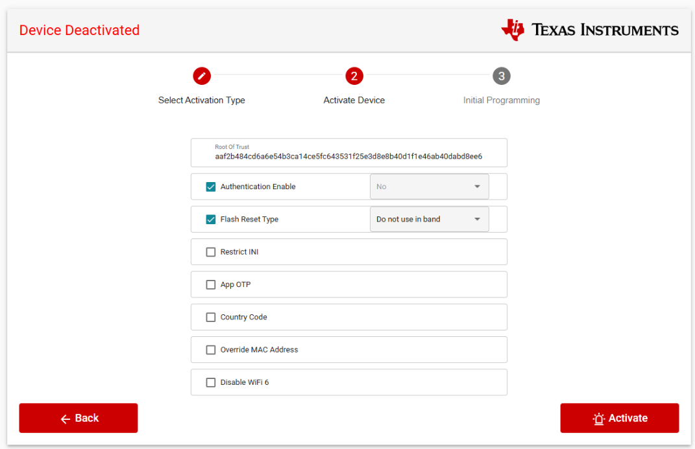
Note
Note that the above images are only presented when you choose to activate your device. If you decide to undergo partial fuse programming, you will only see the five fuses that you are allowed to change as presented below. Once you set the fuses here, you cannot change them again during the activation process.
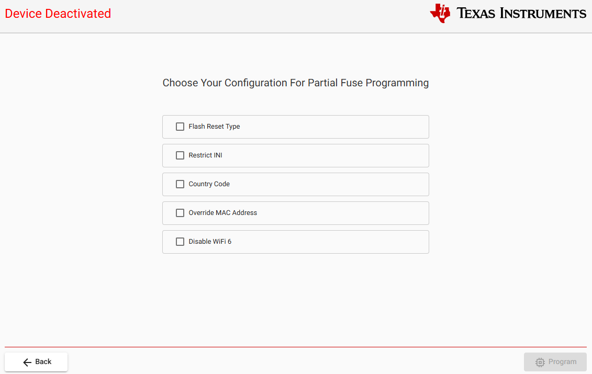
Use cases of the fuses that you can customize:
- Restrict INI: Gives users the opportunity to require authorization (key) to update RF and regulatory settings.
- App OTP: Reserve section for storing vendor defined data in the OTP.
- Country Code: Restricts the device to only accept a conf file with the corresponding country code.
- MAC Address Override: Gives users the opportunity to program the device with their own MAC address.
- Wi-Fi 6 Configuration: Gives users a one-time decision to either enable or disable Wi-Fi 6.
If you choose calibrator test (optional but good practice), you can either calibrate the flash or the PSRAM as shown below. The purpose of the xSPI Memory calibration is performed to validate memory connection and integrity to the CC35xxE devices.
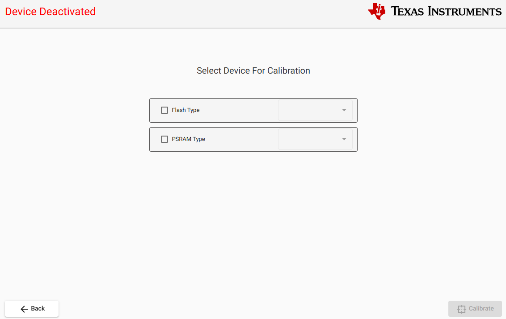
After your device is activated, you may choose to program it via either the Wi-Fi toolbox or using CCS.
When connecting your toolbox to an activated device, you may see and fill out a menu like this:

Please note the “Activate By” field. What you set there must match how your device was activated.
You will then be taking to the Programming Page
{kind=link}
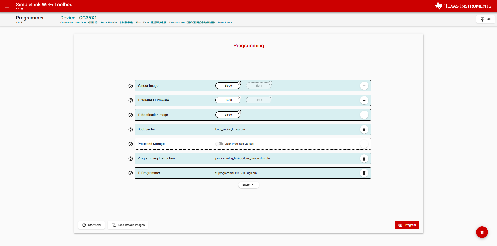
Figure 12 Programming Top Level Screen
The default binaries will be selected which will program the Network Terminal example. The option to load custom binaries is available by pressing on the + sign on the right of each binary. The following pop ups will appear. Starting with Vendor Image
{kind=link}
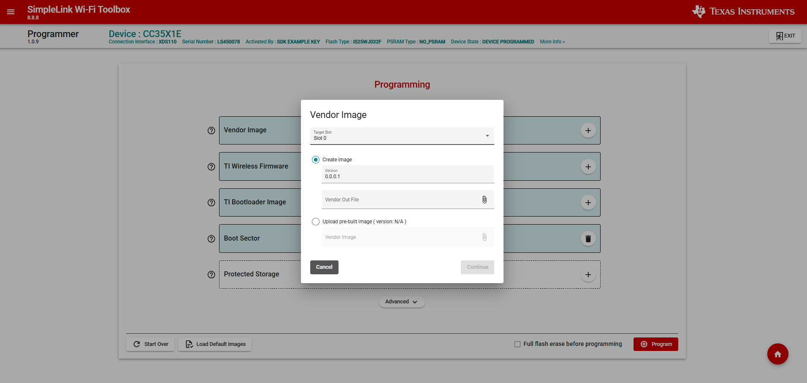
Figure 13 Adding custom vendor image
If OTA is enabled, you will have the option to save the image in either Slot 0 or Slot 1. If you would like to have the image be unsecured choose the Vendor Activation Bypass otherwise use the SDK Example Key. This assumes the devices was activated with the default key, if it was not, select the pre-built image option with an image created using the vendor key.
Changing TI Wireless Firmware
{kind=link}
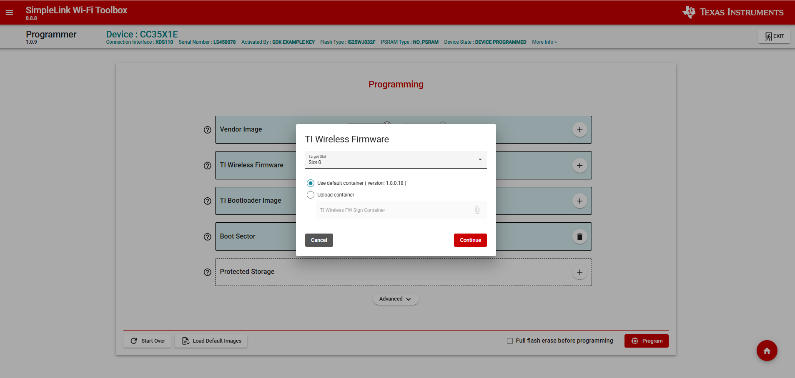
Figure 14 Adding custom firmware image
If OTA is enabled, you will have the option to save the image in either Slot 0 or Slot 1. To switch FW version, find the cc35xx_fw.bin you would like to use.
Note
There is a dependency between the Wifi Driver and the cc35xx_fw.bin. Make sure you only load the firmware that came with the SDK from which the driver is being used.
Other binaries should be kept to default binaries. If all the images have been chosen and the device is ready to be programmed, click on the Program button on the bottom right corner. Once the Programming process has been completed you will be met with a summary for review
{kind=link}
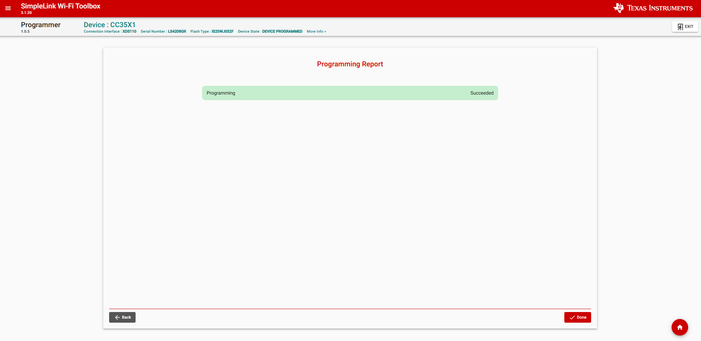
Figure 15 Programming End
If using CCS, you must select the correct activation type in SYSCFG based on how you activated your device as shown below:
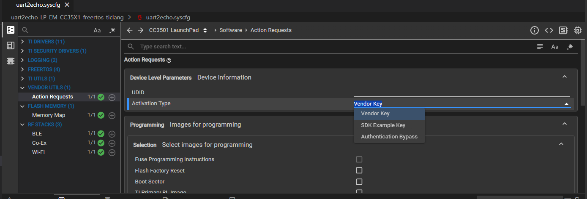